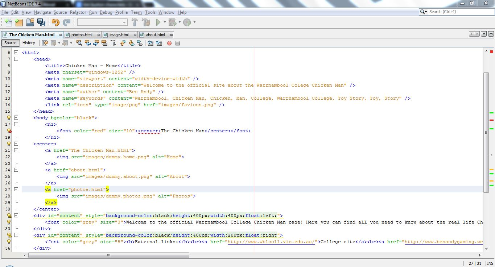

The Chicken Man


Site information:
This site, The Chicken man, was created by a student of Warrnambool College. I am not going to give my full name out due to me not wanting to get into big trouble... I am known online as Ben Andy. If you wish to contact me, email me at: warrnamboolgames@gmail.com
The site was written in HTML5 using NetBeans IDE 7.4
Information on the Chicken Man:
The Chicken Man came along with our school's new principle. After the first few weeks we noticed he looked like the Chicken man from one of the Toy Story movies, with the power of Photoshop we made an image of the principle's face in the Chicken Man suit... He looked pretty close to the Chicken Man from the Toy Story movie. After a lot of laughing with friends, showing them our great discovery... So one day I got bored in a science class and decided to make this very website based around the Chicken Man!
Website making:
The slow process of making this website:

Showing the Chicken Man:
The first email to the Chicken Man: